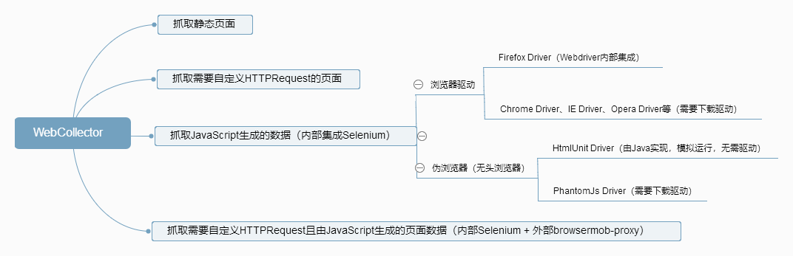

Java-Based Web Scraping Framework WebCollector
Long, Long Ago, there were numerous Python web scraping tutorials available online, and various training courses leveraged the trend to promote Python. In recent years, the hype has shifted towards artificial intelligence. Web scraping can be a simple or complex concept, much like building a doghouse versus constructing a skyscraper - both are engineering projects.
Due to work requirements, I needed to use WebCollector to scrape some data from web pages. In a broad sense, web scraping involves nothing more than accessing page files, extracting the necessary data, and then storing the data in a database. The challenges often lie in two main areas: one, the anti-scraping strategies of the target website, which can be a frustrating battle of wits; and two, the large number and variety of target web pages, making it difficult to formulate effective data scraping and analysis plans.
Overview
This is a brief conceptual diagram. Due to screen width limitations, the content may not be clear. Please open the image in a new tab or click here. The image is not perfect and even contains some incorrect implementations, which will be explained in detail later.
{kind=link}
I divided the target web pages into four types:
- Static web documents that can be loaded with curl
- Pages that require custom HTTP requests, such as search result pages obtained via POST requests or pages that require authentication using cookies
- Pages containing data generated by JavaScript, which is the data we need. Since JavaScript executes after loading, similar to how CSS is rendered by the browser after loading, this data cannot be directly obtained
- Pages containing data generated by JavaScript, which also require custom HTTP requests
Test Environment
To facilitate testing, a simple server is started locally using Node.js to receive requests and return a page as a response. The content of server.js is as follows:
JavaScript
var http = require(‘http’)
var fs = require(‘fs’)
var server = http.createServer((req,res) => {
// Return page content
fs.readFile(‘./index.html’, ‘utf-8’, (err,data) => {
res.end(data);
});
// Print cookie information in the request
console.log(req.headers.cookie)
})
server.listen(9000)
The content of index.html is simpler, containing only a title and a p tag:
```HTML```
<!DOCTYPE html>
<html>
<head>
<title>This is a title</title>
</head>
<body>
</body>
</html>
Static Page
This is the simplest version of a web scraper. The constructor calls the parent class’s parameterized constructor and adds a URL to the queue of URLs to be scraped. The visit method is the consumer, processing each URL request.
Java
public class StaticDocs extends BreadthCrawler {
public StaticDocs(String crawlPath, boolean autoParse) {
super(crawlPath, autoParse);
this.addSeed("http://127.0.0.1:9000/");
}
@Override
public void visit(Page page, CrawlDatums next) {
System.out.println(page.doc().title());
// This is a title
}
public static void main(String[] args) throws Exception {
StaticDocs crawler = new StaticDocs("crawl", true);
crawler.start(1);
}
}
### Cookie Authentication
Requesting with a cookie in the header is equally simple. Just add the appropriate configuration in the constructor, and the Node.js command line will print the cookie content:
```Java```
public CookieDocs(String crawlPath) {
super(crawlPath, true);
// Set request plugin
setRequester(new OkHttpRequester() {
@Override
public Request.Builder createRequestBuilder(CrawlDatum crawlDatum) {
return super.createRequestBuilder(crawlDatum)
.header("Cookie", "name=smallyu");
}
});
this.addSeed("http://127.0.0.1:9000/");
}
// name=smallyu
JavaScript-Generated Data
Testing the case of JavaScript-generated data requires some preparation. Modify index.html and add the following lines of code in the body tag:
JavaScript
As expected, the content of the div returned directly by the request is 1, and the JavaScript, executed by the browser, changes the content of the div to 2. A web scraper accessing a static page can only reach the first step, which is to directly obtain the content returned by the request. Modify the visit method of StaticDocs.java to print the content of the div and confirm it is 1:
Java
System.out.println(page.select(“div”).text());
// 1
Here is an official demo for obtaining JavaScript-generated data. WebCollector relies on Selenium and uses HtmlUnitDriver to run JavaScript:
```Java```
public class JsDocs {
public static void main(String[] args) throws Exception {
Executor executor = (CrawlDatum datum, CrawlDatums next) -> {
HtmlUnitDriver driver = new HtmlUnitDriver();
driver.setJavascriptEnabled(true);
driver.get(datum.url());
WebElement divEle = driver.findElement(By.id("content"));
System.out.println(divEle.getText());
// 2
};
// Create a DBManager based on Berkeley DB
DBManager manager = new RocksDBManager("crawl");
// Create a Crawler with DBManager and Executor
Crawler crawler = new Crawler(manager, executor);
crawler.addSeed("http://127.0.0.1:9000/");
crawler.start(1);
}
}
If you have seen the homepage of WebCollector, you will notice a significant difference between this demo and other demos. When not requiring JavaScript-generated data, the new class extends BreadthCrawler, which extends AutoParseCrawler, which in turn extends Crawler. However, for obtaining JavaScript data, the demo directly instantiates Crawler, skipping BreadthCrawler and AutoParseCrawler.

Why is this done? To reiterate, this is an official demo.
JavaScript-Generated Data After Cookie Authentication
According to the official example, it is clear that cookies cannot be set because the Crawler class does not provide a method for customizing headers. This header customization method is inherited from the AutoParseCrawler class. So how do you achieve both setting cookies and using HtmlUnitDriver?
The result is simple. After reviewing the WebCollector code, I discovered that AutoParseCrawler implements the Executor interface and assigns this to the parent class’s executor in its constructor. In other words, AutoParseCrawler itself is an Executor. The following code illustrates their relationship:
Java
public class Crawler {
protected Executor executor;
public Crawler(DBManager dbManager, Executor executor) {
// ...
}
}
public class AutoParseCrawler extends Crawler implements Executor { public AutoParseCrawler(boolean autoParse) { // Here, executor refers to the parent class this.executor = this; } }
Creating a new Crawler and passing in an executor is equivalent to directly creating an AutoParseCrawler. BreadthCrawler extends AutoParseCrawler, so BreadthCrawler itself is also an Executor. Looking again at the official demo for custom cookies, how can HtmlUnitDriver be used in it? By overriding the execute method of Executor.
Therefore, to obtain JavaScript-generated data after defining a cookie, use a class that extends BreadthCrawler and override the execute method. Here is a complete demo:
```Java```
/**
* @author smallyu
* @date 2019.08.11 12:18
*/
public class JsWithCookieDocs extends BreadthCrawler {
public JsWithCookieDocs(String crawlPath) {
super(crawlPath, true);
// Set request plugin
setRequester(new OkHttpRequester() {
@Override
public Request.Builder createRequestBuilder(CrawlDatum crawlDatum) {
return super.createRequestBuilder(crawlDatum)
.header("Cookie", "name=smallyu");
}
});
this.addSeed("http://127.0.0.1:9000/");
}
// Directly override execute
@Override
public void execute(CrawlDatum datum, CrawlDatums next) throws Exception {
super.execute(datum, next);
HtmlUnitDriver driver = new HtmlUnitDriver();
driver.setJavascriptEnabled(true);
driver.get(datum.url());
WebElement divEle = driver.findElement(By.id("content"));
System.out.println(divEle.getText());
// 2
// Meanwhile, the Node.js command line prints the cookie content
}
// No need for visit when execute is overridden
public void visit(Page page, CrawlDatums crawlDatums) {}
public static void main(String[] args) throws Exception {
JsWithCookieDocs crawler = new JsWithCookieDocs("crawl");
crawler.start(1);
}
}
External Proxy
Perhaps it is not over yet. In the initial conceptual image, both setting cookies and obtaining JavaScript-generated data were defined using internal Selenium and